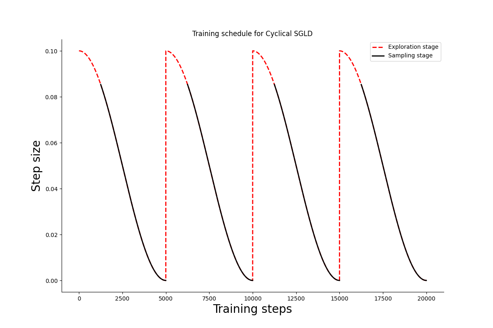
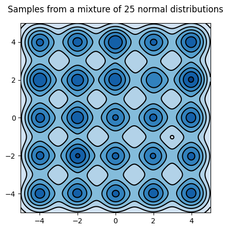
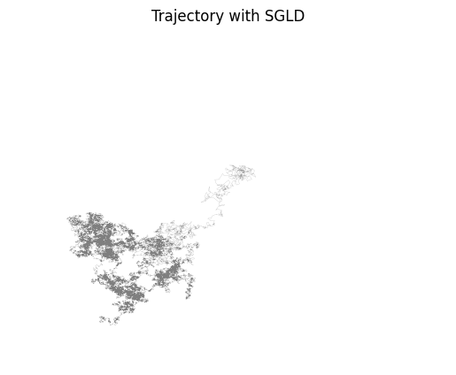
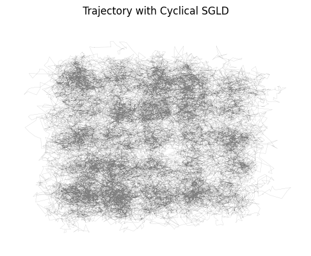
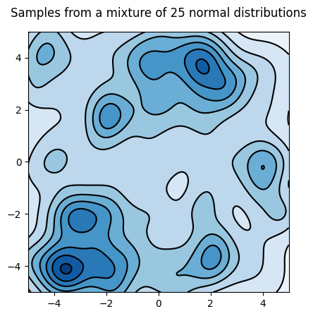

Cyclical SGLD in Blackjax
Cyclical schedule
from typing import NamedTuple class ScheduleState(NamedTuple): step_size: float do_sample: bool def build_schedule( num_training_steps, num_cycles=4, initial_step_size=1e-3, exploration_ratio=0.25, ): cycle_length = num_training_steps // num_cycles def schedule_fn(step_id): do_sample = False if ((step_id % cycle_length)/cycle_length) >= exploration_ratio: do_sample = True cos_out = jnp.cos(jnp.pi * (step_id % cycle_length) / cycle_length) + 1 step_size = 0.5 * cos_out * initial_step_size return ScheduleState(step_size, do_sample) return schedule_fn
Let us visualize the schedule for 200k training steps divided in 4 cycles. At each cycle 1/4th of the steps are dedicated to exploration.

Cyclical SGLD step
We will reproduce one of the paper's example, sampling from an array of 25 gaussians.
import itertools import jax import jax.scipy as jsp import jax.numpy as jnp lmbda = 1/25 positions = [-4, -2, 0, 2, 4] mu = jnp.array([list(prod) for prod in itertools.product(positions, positions)]) sigma = 0.03 * jnp.eye(2) def logprob_fn(x, *_): return lmbda * jsp.special.logsumexp( jax.scipy.stats.multivariate_normal.logpdf(x, mu, sigma) ) def sample_fn(rng_key): choose_key, sample_key = jax.random.split(rng_key) samples = jax.random.multivariate_normal(sample_key, mu, sigma) return jax.random.choice(choose_key, samples)
Let's plot the model's density; we will need the plot later to evaluate the sampler

Sample from the mixture of gaussians
The sampling kernel must be able to alternate between sampling and optimization periods that are determined by the scheduler.
from typing import NamedTuple import blackjax import optax from blackjax.types import PyTree from optax._src.base import OptState class CyclicalSGMCMCState(NamedTuple): """State of the Cyclical SGMCMC sampler.""" position: PyTree opt_state: OptState def cyclical_sgld(grad_estimator_fn, loglikelihood_fn): sgld = blackjax.sgld(grad_estimator_fn) sgd = optax.sgd(1.) def init_fn(position): """Initialize Cyclical SGLD's state.""" opt_state = sgd.init(position) return CyclicalSGMCMCState(position, opt_state) def step_fn( rng_key, schedule_state: ScheduleState, state: CyclicalSGMCMCState, minibatch: PyTree ): """Cyclical SGLD kernel. TODO: Organize the inputs to match the SGLD API better. rng_key Key for JAX's pseudo-random number generator. schedule_state The current state of the scheduler. Indicates whether the kernel should be sampling or optimizing, and the current step size. state The current state of the Cyclical SGLD sampler. minibatch Not used in the mixture example, but this is where you would pass batches of data in any real application. """ def step_with_sgld(current_state): rng_key, state, minibatch, step_size = current_state new_position = sgld(rng_key, state.position, minibatch, step_size) return CyclicalSGMCMCState(new_position, state.opt_state) def step_with_sgd(current_state): _, state, minibatch, step_size = current_state grads = grad_estimator_fn(state.position, minibatch) rescaled_grads = - 1. * step_size * grads updates, new_opt_state = sgd.update(rescaled_grads, state.opt_state, state.position) new_position = optax.apply_updates(state.position, updates) return CyclicalSGMCMCState(new_position, new_opt_state) new_state = jax.lax.cond( schedule_state.do_sample, step_with_sgld, step_with_sgd, (rng_key, state, minibatch, schedule_state.step_size) ) return new_state return init_fn, step_fn
SGLD
Let's start with SGLD:
import jax from fastprogress import progress_bar # 50k iterations num_training_steps = 50000 schedule_fn = lambda k: 0.05 * k ** (-0.55) # TODO: There is no need to pre-compute the schedule schedule = [schedule_fn(i) for i in range(1, num_training_steps+1)] grad_fn = lambda x, _: jax.grad(logprob_fn)(x) sgld = blackjax.sgld(grad_fn) rng_key = jax.random.PRNGKey(3) init_position = -10 + 20 * jax.random.uniform(rng_key, shape=(2,)) position = init_position sgld_samples = [] for i in progress_bar(range(num_training_steps)): _, rng_key = jax.random.split(rng_key) position = jax.jit(sgld)(rng_key, position, 0, schedule[i]) sgld_samples.append(position)
Let's plot the trajectory:

Cyclical SGLD
Now let's sample using Cyclical SGLD.
import jax from fastprogress import progress_bar # 50k iterations # M = 30 # initial step size = 0.09 # ratio exploration = 1/4 num_training_steps = 50000 schedule_fn = build_schedule(num_training_steps, 30, 0.09, 0.25) # TODO: There is no need to pre-compute the schedule schedule = [schedule_fn(i) for i in range(num_training_steps)] grad_fn = lambda x, _: jax.grad(logprob_fn)(x) init, step = cyclical_sgld(grad_fn, logprob_fn) rng_key = jax.random.PRNGKey(3) init_position = -10 + 20 * jax.random.uniform(rng_key, shape=(2,)) init_state = init(init_position) state = init_state cyclical_samples = [] for i in progress_bar(range(num_training_steps)): _, rng_key = jax.random.split(rng_key) state = jax.jit(step)(rng_key, schedule[i], state, 0) if schedule[i].do_sample: cyclical_samples.append(state.position)
It looks from the trajectory that the distribution is better explored:

Let's look at the distribution:

What's next
- As Adrien Corenflos noted, Scott's rule for KDE assumes that the total number of points is the sample size, so is not fit for MCMC samples. We should instead pass the bandwidth manually \(n_{eff}^{(-1/(d+4))}\) with \(d=2\); It should capture more modes.
- Compute the paper's Mode-coverage metric: when the number of samples falling within the radius \(r\) of a mode center is larger than a number \(N\) when we say the mode is covered;
- Use on a "real" problem: CIFAR-100 with Resnet18 for instance;